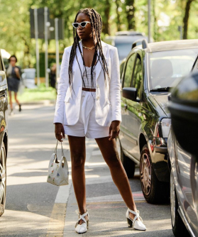

самый летний слитный купальник менее чем за 100 долларов
21 рас продажа, которая заставит вас ждать сезона купальников
В поисках вдохновения в стиле онлайн легко упасть в черную дыру Инста-ада. Когда вы наконец отрываете взгляд от телефона, вы понимаете, что потратили два целых дня на прокрутку каналов - и вы все еще в своем халате, не зная, что надеть (мы все были там). Какой тип побеждает суть. Ну, не бойтесь, мы сделали тяжелый поиск для вас. От наших любимых британских влиятельных лиц до лучших посланий из Милана и самых крутых ньюйоркцев, читайте наше полное руководство по лучшим блогам о моде (и, что более важно, где купить их образы).
“ мода проходит, стиль остаётся. “Коко шанель (1883 - 1971)
Итак, поехали!

Кто? Тришна Гоклани, редактор социальных сетей для Paradise Row днем, британское влияние ночью.
Почему: стиль Тришны сдержан, вечен и просто классен. Следуйте за ней, если вам нужны самые лучшие вещи, от идеального маленького черного платья до кожаной куртки.

Кто? Крисси Форд, сотрудник Harper's Bazaar US, базирующейся в Нью-Йорке.
Почему: «Круто» - это такое простое слово, чтобы описать ее стиль, но оно иначе никак. От строгого кроя до эффектных платьев с яркими принтами и цветами - от Крисси невозможно оторвать взгляд.
Кто? Лиззи - самопровозглашенный Кто? Лиззи - самопровозглашенный «Модный блоггер с севера, живущий в Лондоне», который обслуживает моду, а также личность с сатирическим чувством юмора.
Почему: вышеупомянутые пункты, а также мастер-класс по мужской одежде с шикарной изюминкой.

Кто? Другая северная девушка, бывшая физиотерапевт, ставшая влиятельной в мире моды и ведущая подкастов вместе со своей лучшей подругой Лиззи Хэдфилд.
Почему: Линдси фокусируется не столько на тенденциях, сколько на стиле, который просуществует десятилетиями. Я люблю её атмосферу принцессы Дианы Слоун в стиле рейнджер благодаря огромным пиджакам, джинсам с высокой талией, массивным трикотажным изделиям и элегантным ботинкам и туфлях. Хотя она умело вплетает в свой гардероб более модные вещи, такие как блестящая сумка Рэйчел By Far и обязательные мулы Wandler.

Кто? Модный стилист и влиятельный человек из Брайтона со склонностью к мечтательным путешествиям.
Почему: нет никого, подобного Ханне, для поиска самых дорогих на вид предметов на главной улице, а её фирменная нейтральная цветовая палитра и индивидуальные вещи заставляют хотеть одеваться неподвластно времени.

Кто? Сабина Соколь, модель из Румынии, парижская модель, журналист и влиятельный дизайнер.
Почему: вспомните Бриджит Бардо 70-х или Джейн Биркин, с современным уклоном. В основном парижский шик в лучшем виде.
самый летний слитный купальник менее чем за 100 долларов
5 маленьких предметов роскоши, которые имеют большое значение
тенденции 3 штанов, чтобы попробовать этот сезон